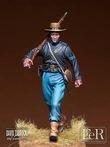
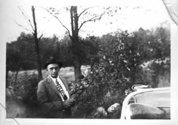
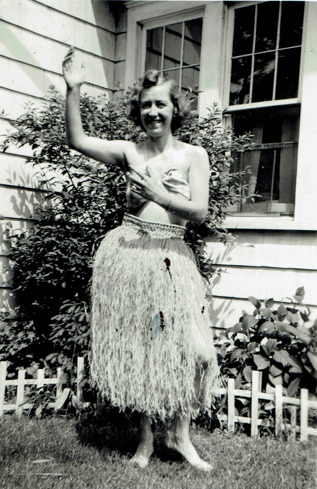
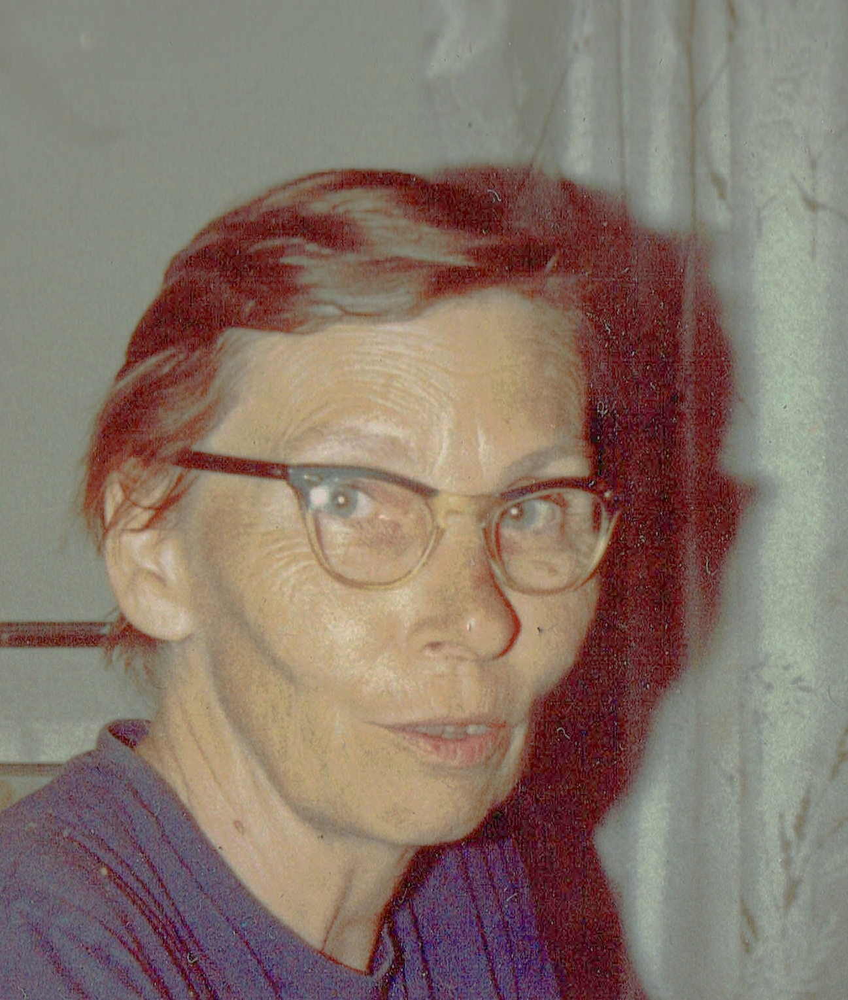
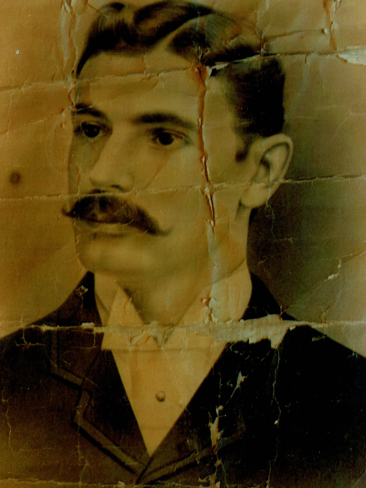

CAMPBELLs, LUGGs, & BLACKWELLs of Nelson, PA
[THIS CHAPTER WILL BE A WORK IN PROGRESS FOR MANY MORE MONTHS
(AT LEAST)]
Bill Thompson's Memoir
Chapter 11: APPENDIX - Who Is Who (An Index)
[The design concept is to show a sample list of names of people the page has information about and that the reader can display if they want to read about that person. Each name is displayed on a 'button'. Click on the button for a person, and "magically," information about that person appears. Click on the button again, and the info disappears. It could be just a sentence or two. Or several paragraphs. And sometimes their photograph(s). Often a link to their entry on WikiTree where our family tree info about them is stored.]
List of Names
-
See her mini-bio. Also see photos and comments at Mom's chapter. Inez was the same age as her sister-in-law (my grandmother) Frances GOODRICH Hoyt. She loved all three of her nieces, but had special bond with my mother, whom she had raised after Joe Hoyt's death.
-
See his WikiTree profile and also see photos and comments at Mom's chapter, and Dad's chapter and at Bill's chapter. He was my great-uncle, but an honorary grandfather ("Grampa Bill") to me and my siblings. He loved his nieces and their children and was kind to all of us. I'm pleased that I can keep his memory alive.
-
I have only the dimmest memories of Aunt Anne, but my siblings all had fond memories of her. A number of relatives described her as "sweeet." My main memory of her is that every Christmas I'd get a package from Plattsburgh. Aunt Della would always send my maple sugar candy. And Aunt Anne would send me a bar of soap and two washcloths.
-
"Melinda," as she was called was born near Plattsburgh, but her parents were French-Canadian immigrants. Dad thought his French ancestors settled on Lake Champlain back when it was still part of Neuvelle France, but that doesn't seem to be the case for his ancestors. (However it may be true for some of his Boulė cousins.) Melinda had 11 children and also raised 3 grandchildren: Maurice, dad & Harmon, but drew the line at also raisng Kearney's 3rd child, Philip "Tubby" Bulley/LaMarche.
-
Cousin Harm grew up with dad and Maurice, so they were close and visted each other many times. He lived in Rochester, NY where he taught typing in HS. As a kid, that seemed like a strange career for a man. He married Gisela Voght, whom my paents always addressed and referred to as "Marcella." They had one child, a daughter named Melinda after the grandmother that raised him. She lives in the Rochester area.
-
Uncle Harry was one of the most memorable relatives I met. He was a real character. At times he was very talkative, and sometimes very uncommunicative, depending on his mood. When I knew him, he lived at his parental home with sisters Della and Anne. Della told us that once he hadn't spoken a word to her or Anne for three months. He wasn't mad; just didn't feel like talking. At dinner he would point if he wanted something passed. The things I remember best about Great Uncle Harry, were his stories, birds, and headlights.
He had some fascinating stories about people he met chauffeuring silent movies around Plattsburgh. He operated a "livery service," that eras's equivalentr of a limo service. Silent movies were being made around Plattsburg because Lake Champlain could serve as the ocean, the sand beaches as desert, and the mountains and Ausable Chasm provided the rest. He met Pearl White when she was filming the Perils of Pauline films there. Also the Marx brothers. My mother said he got invited to a number of events because the film people saw him as a quaint character, which he was. I especially remember his pidgeons, his pellet gun and his expertise with headligts. He raised pigeons, which was interesting to me as a kid. He once got a blue ribbon at a pigeon race in St. Louis. He was also an avid gardener, who shot song birds that tried to eat his berries or whatever. He had a pellet gun that could be pumped up to be powerful. He would sit in an upstairs window and shoot birds when they invaded his garden. That horrified me. The headlights part fascinated me the most. He and I would sit on his front porch steps at night and as cars drew in sight he would call the year and make by just their headlights. When the car would pass the house and become visle under a street light, he was right. He taught me how, but I was never as good as he was. It was all based on how high the headlights were from the ground and how close together they were. There weren't the additional lights or different shapes to lights then.
He inherited his father's part-time job as tender of the harbor lights on the breakwater. Like his pegleged father, when the harbor was open in the warmer months, morning and evening, he would row out to the breakwater, climb the lader to the harbor warning lights at each end of the breakwater, and light (or extinguish the lamps. He had both legs, but one leg had a stiff knee, so that made climbing the lader (or shifting his limo/taxi's gears) a challenge.
-
My dad was raised by his maternal grandparents - French speaking Michel Boulė, born in St-Édouard, Les Jardins-de-Napierville, QC, Canada (where the Richelieau River, which drains Lake Champlain, empties into the St. Lawrence, near Montreal), and Catherine Melinda LaPlante. I don't know when he emmigrated to the US because we had open borders back then. You just walked (or rode) across the border and that was it. But by the time the Civil War started he was in Plattsburgh, NY and enlisted into the NY 16th infantry.
 Uniform of NY 16th Infantry -- complete with straw hat." According to oral tradition, the Sgt. that mustered him in, changed his name to Mitchell Bulley. Mitch was in several battles, was wounded in three, and was a POW twice, in Libby Prison and Belle Isle.His 3rd wound never healed properely and after being mustered out, they removed a leg. Returning after 2 years, he married Melinda and had 11 kids. After the war he farmed, and because of his wounds was given a job as a pension -- tending to the lights on the Plattsburgh harbor breakwater. During the season when the harbor was open, he would row out to the breakwater each morning and evening, climb a tower to the light and light or extinguish it. Then row to the other end of the breakwater and repeat the process. French was spoken in his home, and although he was stern, Dad and Maurice loved him.
-
 Dad's uncle, Kearney Bulley Even though he was dad's uncle, he was only 10 years older than dad. I never met my Great-uncle Kearney (pronounded "Carney"), altho I met and became friends with his youngest son, Rod. I don't know what dad's gripe with Kearney was about. Our questions were always met with "I don't want to talk about it." All we were told was "Don't be a bum like Kearney." Or occasionally "Kearney's a crumb." My mother had no idea what that was all about. She met Kearney once. She and dad were walking down a street in Plattsburgh and encountered him by chance. Dad introduced them and they chatted for a few minutes. She found Kearny to be friendly and charming. Rod had no idea what the problem was. I should have asked Aunt Della, Uncle Harry, or Cousin Harm, but never thought to do so. Kearney had four children, all born 7 years apart. Kearney was a brakeman for the Delaware & Hudson RR, fell and was was run over, losing a leg in the process. His first wife, Mary Lombard died giving birth to their 3rd child, Philip Maurice "Tubby" Bulley. Tubby was adopted by his aunt, Grace Bully LaMarche, and renamed Philip Maurice LaMarche.
-
Cousin Rod is the only child of Kearny that I met. He taught HS history in Haverstraw, NY. He loved it and I'm sure he was a great teacher. I only got to visit him a few times, but we had numerous phone conversations. I got to meet all his family and very much enjoyed our conversations.
-
My grandmother Thompson seems unlucky in love. She moved from Plattsburgh to Williamsport, PA to stay with her sister, Mary Jane BULLY LaBelle, to study nursing. After getting "capped" by the Williamsport Hospital's School of Nursing, she fell in love with a handsome TB patient, Walter Thompson, a violinist from England. I was told he came to the Adirondaks to be cured by the mountain air, but a news clip refers to her as "formerly of New York City" so they may have met there. Apparently he went into remission long enough to marry and have two children, Maurice and dad, but died when dad was 13 months old. At that point, Lulu left her sons to be raised by her mother and returned to Williamsport to work as a nurse there. 13 years after her husmand's death, she married a doctor she met in Williamsport, Dr. Geo. C. Burnley. Lulu and Doc Burnley moved to Nelson, PA and she retrieved her sons from Plattsburgh -- which they didn't want to leave. According to my parents, Doc Burnley was an abusinve alcoholic, who beat his wife and step-sons when drunk. Dad said he and Maurice practiced boxing in order to defend themselves, and one time when Burnley attacked them they managaed to beat him up and ran away from home. I estimate that was abt. 1907. Perhaps Lulu left him, because her 1906 obit has her living then in Tioga, PA. Mom said the Nelson folks "ran him (Dr. Burnley) out of town." 1n the 1910 census he's shown as a widower living in Osceola, PA.
-
My Aunt, Isabelle Merrill HOYT Field. (There are Merrills in our family tree, so I assume some were still in the area and made a favorable impresion on my grandmoter.) Also see photos and comments at Mom's chapter. Isabelle had a step-son, Robert, who lived with his mother. As the youngest child, Isabelle competed for attention by being "the dutiful child" and by being athletic. She and her mother were especially close. She tragiclly died young from memengitis.
-
I know very little about my uncle, Tom Field. His name was rarely mentioned, and never fondly, or with warmth. My impression is that they thought he was uncerimoniously quick to kick out my grandmother whan Isabelle died. And that a stock broker friend of his who had invested my grandmother's life savings "churned" her account and left her with stocks that paying her dividends of only a few cents.
-
I met Aunt Della several times in the Oak St. home she grew up in. After being widowed, she moved back and lived there with her sister Anne and brother Harry. She was nice and always sent me maple sugar candy for X-mas.
-
I never met Cousin Jack, but my parents and siblings knew him and I had several phone conversations with him while he lived in San Diego. He worked for Marshall Field Dept. Store in Chicago, I think as a buyer. My impression is that he was gay.
-
Amos Gibson was a gardener in northern England. He was a "commoner," but he was a gentle, kind man.
-
Dave seems to have been well liked. But Ihave a feeling that his in-laws didn't see him as a "good catch." If you're a store keeper, as Mark Seely was, it's understandable if you don't se a clerk you hired to work in your store as a great match for your daughter. But on the other hand, Lena had been profoundly deaf since having scarlet fever as a child, so she may not have had many suitors. But his storic is somewhat tragic. He and Len postponed their wedding for a year so that he could pay for training for his widowed sister (my grandmother) in Elmira to be a seamstress and able to support her 3 young daughters. The training was successful, she got a job at Izards Dept. Store in Elmira. And Dave and Lena were able to marry. But he got TB and died within a year of their marriage. See his photo and details at WikiTree profile
-
My mother told us an impressive story about Elizabeth (who's surname was pronounced "Battram"), mom's maternal grandmother. (For photo and more details, see her WikiTree profile, We were told that she was born in England, and that her parents died in mid-ocean while emmmigrating. And that she and H.D. met because H.D. took a job working for her guardian uncle in a bank. Which was a gret story, except that she was born in IL, where her parents' graves are located. But they were born in England, that part of the story was correct.
Elizabeth and her daugheter, Frances, looked a lot a like. It often takes me a while to figure out which one I'm seeing in a photo. Her health seems to have been frail. Methodist bishops usually relocate a minister after 7 years. When it became time for Rev. H.D. Goodrich to be reassigned, he resigned instead, because of the support network she had in Nelson -- and took a job as a mail carrier. When she developed dementia, her carpenter son-in-law, Lee Tubbs, built a house for H. D. & Elizabeth across the street from his and Mary's home in Osceola. In her final years, weather permitting, she would pack a trunk and sit on the front porch, waiting for her brother to pick her up.
-
My maternal great-grandfather, Rev. Henry David Goodrich (for photo and more details see his WikiTree profile) must have been a remarkable man. My siblings all remembered him fondly. My grandmother lived with us when I was growing up, so I often heard her and my mom talking about him (their father and grandfather respectively). After his widowed mother remarried He moved with her from Davenport, NY to a fine home in Campville, NY [in Tioga Co., NY, which is on the north side of the Susquehanna R., just wet of the Broome Co. line]. He ran away from home to join the Union Navy, where he served on the gunboat, USS Metacomet, and fought in the Battle of Mobile Bay. After the war he moved to Illinois (perhaps because a sister lived there) and Elizbeth Batterham lived on a nearby farm. They married, tried homesteading in Iowa where they lived in a "soddy," but left when the farm failed because of a drought. He moved to Tioga Co., PA because his brother, Charles, lived there. He became Nelson's Methodist minister, and then a mail carrier. He loved telling stories, was active in the GAR and well liked in the community.
-
(For details, see his WikiTree profile. He tried very hard to be a dutiful son, sibling, husband, father, grandfather, employee, and citizen. [more to add]
-
(See her WikiTree profile for details.) Mae was a creature of habit. She had a fixed menu for each day of the week. If you looked at the food on the table, you could tall what day of the week was.
Fairness was important to her and to her that ment that on a gift giving day, she and Del should give the same gift to all the male recipients, e.g. Hawiian shirts. And a different gift, perhaps identical (except for size) necklaces to all the female recipients.
-
Lenore was hospitable and friendly, but I never felt as close to her as I did to her siblings. She and her first husband, Leonard "Bill" Perry, were very "down to earth," unpretentious. He was a SeaBee during WW2 and had a tragic end. After years of an apparently happy, sucessful marriage, he underwent a sudden personality change. He began flying into rages and divorced her. After he died, about a year leter, an autopsy revealed a large tumor on his brain. Lenore married Phillip B. Hallinan, whom I never met and they moved to FL.
-
My mother's paternal grandfather, was born 1832 in Fairfield, CT and died in Nelson, PA in 1888. We have several letters he wrote while in the Civil Ward and extensive documentation from the Library of Congress about his many attempts to get a disability pension because of rheumatism he contracted by sleeping on the ground. I was told that he was a doctor's assistant, so I imagined him as one of the assistants working in field hospitals, and stacking amputated arms and legs like firewood. But from his applicatins, I learned that his job was to take care of the doctor's horse. .
-
Ruth TUBBS Krise (for photo and details see her WikiTree profile) was my mother's 1st cousin. She was proud of being the first woman in Tioga Co., PA to be named an officer of a bank. She was well organized, efficient, a good hostess and an avid horsewoman. Both she and her brother, Hugh, shared their father's dry, New England style sense of humor.
-
I remember him. He and his wife, and occasionally some of their children, visited us several times in Binghamton and we visited them in Williamsport several times, usually combined with visiting his sister, Gerry and her husband, "Doc" Ritter. "Babe" and dad had a cordial relationship. He and his wife Molly and a couple of their grandchildren joined us on a trip to Plattsburgh once and I have pictures of us visiting the Black River Canal en route and remember that we went swimming at the beach at Cumberland Head State Park on Lake Champlain, but can't recall any specifics about he or Molly that would be of interest.
-
I remember meeting him, his wife Marguerite and their 2 daughters, Becky & Christy in Williamsport and Plattsburgh. And corresponded with him this century. He was friendly, but I don't recall any details of interest.
-
I didn't see him often, he lived in MI. But I have vivid memeries of his children, who were close to my age. However I corresponded extensively with his only child, James Grant Labelle. Jim and I had a lot in common, such as working in quality control and had quite a cordial correspondence -- until politics got in the way.
-
I probably met him, but don't remember it. However I corresponded extensively with his only child, James Grant Labelle. We had a lot in common, such as working in quality control and had quite a cordial relationship -- until politics got in the way.
-
Great-aunt Mary Jane died long before I was born and when my siblings were too young to remember her. But I know she was well regarded. And was there for my grandmother Bulley and for my dad and his brother. My grandmother, "Lulu" Bulley Thompson Burnley, moved to Williamsport, PA where Mary Jane lived, to study nursing at the Williamsport Hospital's School of Nursing. And returned to live there after being widowed (and leaving her children with her mother). And she sheltered dad and Maurice after they ran away from home.
-
Great-aunt Grace also seems to be respected by all who knew her. After her sister-in law, Mary Lombard Bulley, died in childbirth from having Kearney's 3rd child, Philip Maurice "Tubby" Bully, the baby was initially placed in an orphanage. But from a sense of compassion or call of duty, Grace and her husband, Arthur Edmond Lamarche adopted Tubby and renamed him "Philip Maurice LaMarche."
-
Bill's amazing, wonderful wife. See her mini-bio.
-
See her chapter in Bill Thompson's memoir.
-
I liked Gerry because she was friendly, animated, and very genuine, and down-to-earth. And amazed that when her husband was served paked potatoes, he expected her to open, smush up and butter them for him because he had "dilicate hands."
-
Cousin Alma was my grandmother's 1st cousin. I don't remember her well. Her voice seemed very old to me as a kid.
-
She was called by her middle name, Gretna, because her mother's first name was 'Anna.' She and my sister Anne were coworkers (and friends) at Security Mutual Ins., Co. As were Tom and Gretna's brother, Wilbur Walker -- long before Tom and Gretna met. You can see photos of her in Anne's and Hank's chapters in my memoir. Tom sent her the Hula skirt when he was in HI for more training during WW2. She seemed way too shy and timid to have ever worn the "grass skirt", let alone danced in it!"
-
Bill's ex-wife, still living. They are on good terms.
-
 Bill's late sister-in-law. We didn't relate well. I saw her as bright, talented (she played the oboe in college) and very competent -- but mean spirited, and a bully. During my teenage years she rarely missed an opportunity to pick on me. She was raised by a brilliant, but mentally ill mother and passed the damage on to later generations. One relative commented that her mistreatment as a child "Was an explanation, but not an excuse." One of Ellen's grandchildren refers to Ellen as "The Dragon".
-
See his chapter in Bill Thompson's memoir.
-
See her chapter in Bill Thompson's memoir.
-
My Uncle Maurice (whose name I always assumed was 'Morris.' I didn't see him often because he lived near Ashville, NC, but he came to visit a few times and my parents visited him several time. He served in France in WW1. And was involved in a tragic accident as a boy in Plattsburgh, NY. He shot at a bird flying over with a .22 rifle. Unknown to him, a neighbor kid was playing in the adjoining back yard, but hidden by a high fence. When the bullet came back down, it killed the neighbor.
I would ask my father "May I ask you a question?" And he would reply, Sure, my brother and I know everything." I'd ask my father the question; he'd pause; and then reply, "That's one of the things my brother knows." He owned and operated a hardware store in Chandler, NC. My mother was very judgemental about Maurice's "You've got to go along to get along" attitude toward segregation. She saw that as a moral failure on his part. Not to condone segregation, but in all fairness, if he had ignored the "Jim Crow" laws and customs regarding segregation, he would have been seen as a "Damn Yankee" and soon gone out of business.
You can read more about Maurice in the chapter on my father.
-
We always dreaded her visits. She was a senior citizen, "Southern Belle," who continually complained and found fault. And bragged about how much better things were in the South.
-
I know way too little about my grandfather, Walter F. Thompson (ca1865 - 1895). I know he was born in England, died of TB in Plattsburgh, NY and was a violinist in NYC. But that's about it. I kick myself that I never asked my Bulley great-aunts and great-uncle about him.
-
See his chapter in Bill Thompson's memoir.
-
See his chapter in Bill Thompson's memoir.
-
This block will contain paragraph(s) revealing the secrets as to how he was able to leap tall building in a single bound and outrun a speeding bullett.
-
I didn't know him well. I only recall meeting him once when they visited when I was a kid. And one Saturday intruded upon one of his fix the house projects by visiting him in Chandler on short notice. I was very inconsiderate and intrusive and owe him a post humous apololgy. His wife was very gracious and his daughters were nice.
-
Cousin Diana is a daughter of Winifred BULLEY Parry, who was a daughter of Leslie Grant Bulley, Uncle Kearney's eldest child. I hope to meet Diana soon. She lives in NH. We correspond a lot.
-
We all liked Hugh, who reminded me of his dad. I think he and Hank related the most. I knew his wife and son Dennis, but didn't meet his son David until Hugh's funeral. Hugh, Hank, my 1st cousin Dave Walker and my son Warren, all got their 6" 4" height from H. D. Goodrich. Hugh had a provblem with alcohol, but finally got his life in order through AA. He ended up living with his sister, Ruth, in Knoxville, PA and inherited her house, but died of lung cancer from smoking.
-
My father was rarely lavish with praise. But he had huge respect for my mother's uncle, Lee Smith Tubbs', craftmanship. Both as a carpenter and a clock and watch repairer. Dad used to say, "Lee's not a carpenter -- he' a cabinet maker that builds houses." Lee usually was a man of few words, but had a dry sense of humor. As a kid, I was fascinated by the workroom in which Lee repair watches. The walls were covered with clocks. And shelves were filled with them. Few things were as exciting as to be in that rooms when the hour changed --doors opened and cukoos popped out; guys with sledge hammers appeared and struck bells; figures appeared and did pirouetts -- all to an amazing caucaphony of sounds.
-
I enjoyed visiting my great-aunt, Mary (Goodrich) Tubbs, because she always had large cookies for me and there were large, cast iron, wheeled toys to play with. But what most impressed me, was a story I later learned about her and her husband, Lee Tubbs, They felt they needed to have some savings before getting married. Keep in mind that he was born in 1880 and she was born in 1885. In 1905 they saw and add for a logging camp that wanted to hire a cook and also a teamster to drive their horse drawn lumber wagons. They applied and were hired -- with Lee as the cook, and Mary as the teamster!
. -
Sabrina BURGETT Goodrich Van Tuyl, was the mother of H. D. Goodrich, and our link to our slave-owning ancestors, to our Schoharie Co. German ancestors and their experiences during French and Indian War raids, to our Danish ancestors, and (along with my ggf, Wm. Hoyt) to our Dutch ancestors. She was b. 1810 in Delaware Co. NY (in or near Davenport) to Conrad and Hulda Rowe Burgett (Conrad's father was Hendrick Burghardt) and died 1886 in Nelson. In 1829 she married David Goodrich with whom she had 5 children: James, Charles, Ephorcene GOODRICH Ames, H.D, & Viola GOODRICH Slocum. Reportedly she often said, "Now H.D., you let Viola be."
David Goodrich was a grocer in Davenport, NY who got into a bitter rivalry with his brother Timothy, who was also a grocer there. David lost, went broke, died in 1846 and was buried in a potters' field. After struggling to support herself and her children, in 1857 she married widower Isaac Van Tuyl, formerly of Davenport, and she and her children moved to Campville, NY (on the north bank of the Susquehanna, just west of the Broome Co. line. Isaac died in 1864 and she moved to Nelson, PA where her sons, James Goodrich and Charles Burget Goodrich had settled. (James was a butcher and Charles an innkeeper). Sabrina was buried in the lovliest section of the Nelson Cem. under huge spruce trees and with a high monument. (I'll look for a photo of the monument.) The Army Corp of Eng. moved her grave to the N.W. corner of the cemetery as part of the Cowanesque Lake Project. Aparently her sons were't fond of their step-father, because neither the cemetery monument nor her obituary mention the name Van Tuyl -- she's referenced as "Sabrina Burget Goodrich."
-
I always liked Dave. (For photo and details, see his WikiTree profile.) He fished, hunted, and, while growing up, trapped muskrats for spending money. He and Hank fished together in 9 Mile Swamp. He taught himself to flake arrowheads. We had some great conversations and he had fascinating stories about the Siege of Bastogne and of being in the small (I think 3 man) patrol that liberated Dachau.
-
My aunt, Elizabeth "Betty" Hoyt Walker, was always nice to me, but I never felt much warmth behind it. There was always a rivalry between her and my mother. As the eldest, mom became "Poppa's little girl." I suspect that Betty found "being naughty" an effective way of getting attention. Mom was prim and proper. Betty seemed to delight in shocking or being vulgar to embaras mom. She was a good corporate wife, joining Roy at the country club when he wined and dined customers of prospects. Or being hostess.
Roy was part of that competition. He attempted to be a suitor of my mother's, and switched his attentions to Betty when mom wasn't interested in him.
It seems harsh to say, but Betty always seemed to me to be rather shallow. That she didn't share my mother's intellect or general curiosity. She (and her mother) always seemed to me more "party girls."
-
I didn't know Joe well. Before the war he lived in Norwich, NY and attended NYU. He left NYU to join the Army, where he served in the S. Pacific for 5 years with the Army Signal Corps. Aftger the war he married, lived in Oxford, NY, was bired bv the NY State Highway Dept., became a civil engineer and moved to Fl where he workd for te FL Highway Dept. My impression is that he became an alcoholic during the war and died of alcoholism. He had a daughter, who is living.
-
My uncle, Roy Walker, was very gregarious, very outgoing. The kind of person my parents often described as "hale fellow, well met." He was a "back slapper," a "glad hander," a "joiner." He was a freight agent for the Delaware, Lackawanna and Western Railroad so his social life and business life were inextricably mixed. He was always on the lookout for potential customers and that was a factor in his involvement in the Rotary, Kiwanis, Optimist Club, Masons and Shriners. I said "a factor" because he was genuinely proud of the community service those organization provided. I think he was naturally friendly. And he always treated me well. We gave our second son the middle name 'Roy,' because both my wife and I had fond memories of an uncle named "Roy." One of the distinctive things about him was the "bear hugs" with which he greated relatives.
I later learned from some female relatives that during those hugs they felt that sometimes his hands were overly friendly.
Ending this, our final chapter, in the spirit of Uncle Wiggily
stories:
Because the Skeezicks tripped over the Pipsisewah, I won't tell you about our future. You'll have to discover that yourselves.